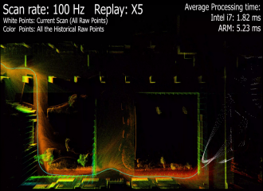
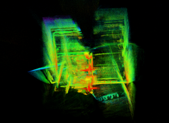
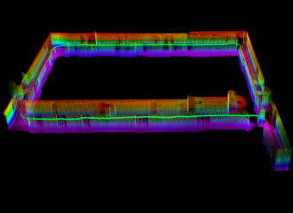

Sense
Livox CustomMsg and IMU contracts preserve timing and frame semantics.
INPUTROS 2 HUMBLE / GAZEBO / LIVOX CUSTOMMSG
A simulation-first stack that turns 3D sensing into map-aware, safety-gated robot actions. Every handoff is observable, testable, and ready to be replaced by a verified adapter.

01 / ARCHITECTURE
Sensor transport, state estimation, map localization, perception, and competition control meet through small ROS 2 packages with clear ownership.
Livox CustomMsg and IMU contracts preserve timing and frame semantics.
INPUTFAST-LIO2 produces local odometry and registered clouds for the map path.
STATEFrozen PCD maps anchor scan matching and controlled tracking recovery.
MAPPerception and freshness gates arbitrate every competition action.
CONTROL02 / SELECTED EVIDENCE
Curated Gazebo simulation views show the geometric, timing, and reconstruction surfaces that the stack is built to make measurable.


03 / ENGINEERING PRINCIPLES
Simulation, replay, and runtime artifacts keep their provenance at every step.
Freshness, map lock, target validity, expiry, and recovery are control inputs.
ROS 2 package boundaries make the sensor, estimator, and actuator layers replaceable.
PUBLIC RESEARCH WORKBENCH